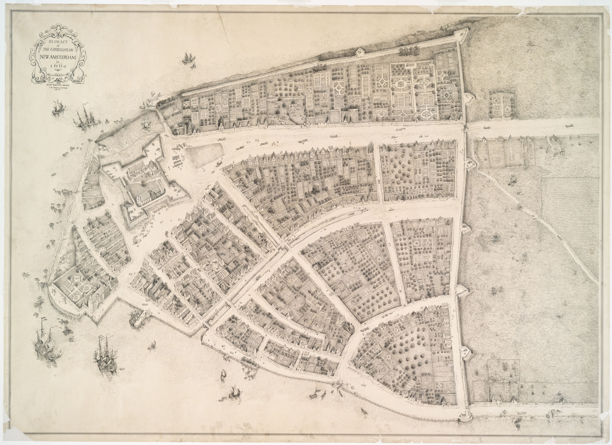
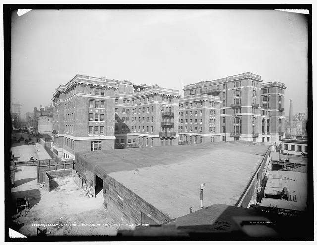

紐約新醫革命
New Amsterdam
Bellevue 舊行政大樓入口拱門，現位於院區中庭內。Beyond My Ken 攝，2011 年，CC BY-SA 4.0，縮放呈現。[4]
走進醫院之後
新任醫療主管 Max Goodwin 報到時，問院內同事一句簡單的話：「我能幫什麼忙？」他所接手的是一所歷史悠久、資源吃緊的紐約公立醫院。急診只是入口，故事一路走到病房、精神科、手術室、門診和董事會。[1][5]
影集最貼近現實的地方，是沒有保險的人確實能在 Bellevue 得到急診照護，也可能透過市立體系接上門診。劇中常由 Max 在一天之內解決的問題，現實裡通常需要醫療團隊、財務諮詢、市府方案與後續轉介一起處理。[6][7][8]
導讀
為什麼叫 New Amsterdam？
New Amsterdam 是紐約的早期荷蘭殖民城鎮名。 十七世紀，荷蘭西印度公司在曼哈頓南端發展皮毛貿易與港口聚落，以荷蘭的阿姆斯特丹為名。New Netherland（新尼德蘭）指範圍更廣的殖民地。這片土地原是 Lenape 人的家園，殖民地的發展也使用了遭奴役的非洲人勞力。1664 年英國接收，城鎮改名 New York，以約克公爵命名。[9]
影集把這個舊地名借給虛構的市立醫院。現實中的 Bellevue 沿用自己的院名，其歷史可追溯到 1736 年，已是英屬紐約時期。於是劇名同時把觀眾帶到兩個地點：曼哈頓南端的早期港城，以及今日東二十七街的公立醫院。若把 New Amsterdam 讀成一座老城為公共醫療尋找新做法，那是從全劇讀出的意思。[10][11]
約 1660 年的新阿姆斯特丹。這是 John Wolcott Adams 於 1916 年依 Castello Plan 重繪的版本。圖中可見南端的堡壘、臨港街廓和聚落北緣的防禦線。來源為紐約公共圖書館與 Wikimedia Commons，公有領域，圖片縮放。[12]

Bellevue 在曼哈頓哪裡？
462 First Avenue，第一大道與東 27 街交會處。 醫院坐落在曼哈頓東側的 Kips Bay，靠近東河。沿第一大道往北，先到 NYU Langone 的 Tisch Hospital 一帶，再往北到聯合國總部。Bellevue 屬紐約市的 NYC Health + Hospitals，並與 NYU 醫學院有教學關係。地圖上兩座相鄰的醫院各自有營運體系。[10][13][14]
左圖紅框是右側放大範圍，方位為上北。院址靠東河，殖民時期的港城約在今天的曼哈頓南端，兩地直線相隔約 5 公里。圖依行政區岸線與公開地址繪製，地標為約略座標。[9][13][15][35]
從六張病床到急重症轉診中心
1736 紐約市在今日市政廳所在地的濟貧院開設六床醫務室，是 Bellevue 追溯院史的起點。[10][36]
1790 年代至 1825 市府為防黃熱病，在 Kips Bay 的 Belle Vue Farm 設隔離院。新的 Bellevue Establishment 於 1816 年啟用，1825 年 Bellevue Hospital 正式定名。[36]
1861–1879 成立附設醫學院，1869 年開辦早期救護車服務，1873 年設護理訓練學校，1876 年設急診館，1879 年設精神科病房。今天的 Bellevue 仍把創傷急救、精神醫療和醫學教學放在同一座公立醫院裡。[10][16][17]
2012–2014 珊迪風暴使地下室進水，Bellevue 首次全院撤離，隔年恢復完整服務。2014 年，該院治療在幾內亞服務後返紐約的伊波拉病人 Craig Spencer。東河岸的院址、重症設備與市級公衛應變，都是劇中重大事件可對照的背景。[18][19]
寫書的醫師與拍劇的人
Eric Manheimer｜內科醫師、前 Bellevue 醫療主管
Manheimer 在布魯克林 Kings County Hospital 接受內科訓練，曾任紐約大學醫學院臨床教授。出版社記載他在 Bellevue 擔任醫療主管逾十三年，另有製作訪談概述為約十五年。2012 年出版的《Twelve Patients: Life and Death at Bellevue Hospital》以十二位病人的故事記下這段經歷。他也寫及自己確診癌症，如何從醫療決策者變成接受治療的人。[5][20]
書中的病人來自不同的生活處境，包括移民與在押者。讀這本書，可以追問病人為什麼要到病情嚴重時才走進 Bellevue，返家後又能不能拿到藥、回診或找到照顧他的人。劇中 Max 的癌症借用了這段醫師成為病人的經歷，Max 的家庭、感情與院內事件則是編劇發展出的故事。[5][20]
David Schulner 與 Peter Horton｜把院外的問題寫進醫院
Schulner 是主創、編劇兼執行製作人。Horton 是執行製作人及本劇導演之一，首集由 Kate Dennis 執導。Schulner 在 2016 年把原著帶到 Universal Television，當時移民與醫療政策是美國公共辯論焦點。他在電視學院訪談談到，許多人同意制度出了問題，卻很少談還有哪些地方能改善。他希望寫一群人在現有制度裡試著改變做法。Horton 則把院內個案視為討論貧窮、移民與種族歧視的入口。原著作者 Manheimer 也參與製作。[5][34]
Schulner 後來以《平價醫療法》（ACA）險遭部分撤銷為例，談他如何看到安全網的脆弱。正式表決是 2017 年 7 月 28 日，參議院以 49 票贊成、51 票反對擋下俗稱 skinny repeal 的修正案。他也舉新鮮食物難以取得為例，說明為什麼醫療劇需要寫病人走進醫院以前的生活。[21][22]
在醫院裡，他們各自做什麼？
Max Goodwin（Ryan Eggold） — 醫療主管。上任調整部門與優先順序，自己又要接受癌症治療。
Helen Sharpe（Freema Agyeman） — 腫瘤科醫師。替 Max 治療，也要處理病人能否接受篩檢和後續照護。
Lauren Bloom（Janet Montgomery） — 急診主管。在人力緊繃時維持急診運作，也面對自身的成癮與復原。
Floyd Reynolds（Jocko Sims） — 心臟外科醫師。受 Max 邀請重建心臟外科，急診收治後常得由他接手。
Iggy Frome（Tyler Labine） — 精神科醫師。病人能否好轉，常與家人、學校或所在機構有關。
Vijay Kapoor（Anupam Kher） — 神經科醫師。第一季的資深班底，疫情成為他職涯的重要轉折。
Elizabeth Wilder（Sandra Mae Frank） — 第四季加入的聽障外科腫瘤醫師，讓手語與醫療溝通進入劇情。
角色職務與情節依官方節目簡介、訪談及分集資料彙整。另見電視學院採訪與主要演員照片。[1][3][5][23]
醫師自己的病與生活
Max Goodwin｜醫療主管，癌症病人與單親父親
Max 上任時已患咽喉部癌症，由腫瘤科的 Helen Sharpe 協助治療。他常把部門改革與別人的病排在前面，自己卻得面對治療、體力下降，以及妻子 Georgia 對家庭生活的期待。醫療主管能替病人調動資源，輪到自己時，也需要有人提醒他接受照顧。這部分借用了原著醫師 Manheimer 自己罹癌的經歷。[3][20]
第一季末，Georgia 在女兒 Luna 出生後的救護車事故中受傷，第二季開場揭示她已過世。Max 一面治療與追蹤癌症，一面獨自照顧嬰兒，還不時想像妻子就在身邊。他的喪慟讓「照顧病人」與「回家照顧孩子」成為每天都要取捨的事情。後來與 Helen 發展感情，也要面對失去妻子以後，如何重新容許自己與別人親近。[38][3]
可對照第一季第 1、22 集，第二季第 1、9 集。第二季第 1 集以回憶與想像逐步揭示 Georgia 的死亡。
Lauren Bloom｜急診主管，ADHD、成癮與家庭牽連
Bloom 在劇中有注意力不足過動症（ADHD），原本服用處方藥 Adderall。在長工時與高壓急診工作中，她逐漸出現藥物濫用問題，向同事隱瞞，之後接受評估並進入戒治。第一季第 13 集，她與精神科醫師 Iggy 談話，帶出她平常很少讓人看見的家庭經歷。[39][40]
她的母親酗酒，父親長期把心力放在工作。Bloom 離家求學後，把妹妹留在混亂的家庭中，這份愧疚在後來與妹妹 Vanessa 重逢時再次出現。妹妹也有成癮問題，使 Bloom 必須思考怎樣幫她，以及自己能承擔多少。救護車事故造成的腿傷與持續疼痛，又讓她面臨止痛、工作與復原的難題。與 Leyla 的戀情則牽涉她用捐款協助對方取得住院醫師名額後，造成的信任破裂。[40][41][3]
可對照第一季第 4、13 集，第二季事故後的復原，第四季與 Leyla 的名額爭議，以及第五季第 4、5 集。ADHD 的藥物治療可改善注意力，處方興奮劑也需要持續監測濫用及成癮風險。Bloom 的故事呈現她個人的用藥與復原經歷。[48]
Helen Sharpe｜腫瘤科醫師，生育願望與被照顧的經驗
Helen 初期是常在媒體露面的醫師，回到臨床後逐漸成為 Max 的治療者與重要支持。她自己希望成為母親，卻發現生育能力的限制，得考慮接受醫療協助。第三季又要照顧兄長去世後留下的姪女 Mina，真正相處時遇到的衝突，使「想要孩子」與「承擔養育責任」有了具體的重量。[3][42]
她與母親之間仍有童年與父親離家的舊傷。第四季，她與 Max 到倫敦展開新生活，後來卻因中風出現語言困難，需要復健，也要接受伴侶照顧。長期替病人說明病情的醫師，突然很難表達自己的想法，讓兩人的關係又多了一層依賴與不安。[3][43]
可對照第一季第 5 集、第三季的 Mina 家庭線，以及第四季第 17、18 集的中風與復健。
家人、伴侶與照顧責任
Iggy Frome｜精神科醫師，飲食失調與自我價值
Iggy 擅長聽病人說話，對自己卻常有強烈的羞恥與否定。他的飲食失調在第二、三季逐漸浮現，第三季第 2 集談到父親曾用羞辱與控制體重的方式對待他。成年後，他仍很難平和地看待食物與身體，也擔心這些習慣會影響孩子。[3][44]
他與丈夫 Martin 共同養育孩子，但工作、想再收養孩子的決定，以及對外界肯定的需要，逐漸牽動婚姻。病人的依賴曾讓他感到自己有價值，也使他難以維持治療關係的界線。第四季轉向教學與管理，是他嘗試調整工作的方式，與 Martin 的衝突仍要繼續處理。[44][3]
可對照第三季第 2 集及第四、五季的治療界線與婚姻線。演員 Tyler Labine 參與人物飲食失調故事的發展。[49]
Floyd Reynolds｜心臟外科醫師，成家理想與父親的缺席
Reynolds 初期對婚姻、孩子與家庭有明確想像，也受到母親對伴侶選擇的期待影響。他後來與 Evie 的婚約、為感情搬遷的決定，以及與已婚同事 Lyn Malvo 的關係，讓原本清楚的計畫變得複雜。家庭理想和實際的感情生活，逐漸出現他自己也難以接受的落差。[3]
後期他重新接觸失聯多年的父親 Horace。父親當年的缺席和反覆無常，留下長期傷害；第五季加入父親可能患有未獲治療的雙相情緒障礙這條線。Reynolds 一方面嘗試了解病況，一方面仍是希望父親為過去負責的兒子。疾病帶來新的理解，父子關係則得慢慢重建。[45][3]
可對照第一、二季的 Evie 線，第三、四季的 Malvo 線，以及第五季第 2、3 集的父親線。
Vijay Kapoor｜神經科醫師，喪偶與疏離的兒子
Kapoor 在妻子去世後承受孤單，也對生前沒能好好說出的感情留有遺憾。他與兒子 Rohan 的關係緊張，兒子的成癮經歷又讓父子之間充滿失望、戒備與修補的嘗試。Rohan 與 Ella 交往、Ella 懷孕後，Kapoor 開始面對如何照顧下一代。[46][3]
第三季的 COVID-19 使他重病，後續病況讓他無法回到原來的工作。他從資深醫師變成需要同事救治的人，也讓 Iggy 等人經歷擔心朋友與失去日常工作夥伴的過程。[3]
可對照第一季第 5 集的父子重逢、後續 Rohan 與 Ella 線，以及第三季初的疫情。
Elizabeth Wilder｜外科腫瘤醫師，溝通與手足照顧
第四季加入的 Wilder 是聾人醫師，工作時使用美國手語，並與口譯員 Ben 合作。她的日常牽涉手術與診療時如何安排有效溝通，也牽涉同事和病人對她能力的預設。Max 想延攬她時，她還必須考慮照顧患有思覺失調症的兄弟 Adam，能否同時承擔更繁重的職務。[47]
第四季第 13 集進一步帶出這段手足關係。她在第五季與 Max 發展感情，後來接下醫院的領導責任，讓照顧家人、自己的感情與職涯選擇持續交錯。[3][33]
可對照第四季第 1、13 集與第五季。Ben 是她的口譯員，Adam 是她的家人。[47]
無保險的人真的能看病嗎？
能進急診、能接上長期照護、最後付多少，是三個不同的問題。 Bellevue 確實是安全網醫院，紐約市也有制度讓部分無保險居民取得低費用、甚至零費用的照護。聯邦急診法規與紐約市計畫保障的範圍各有不同。[6][7][8]
第一道門｜聯邦 EMTALA 的急診義務
對受《緊急醫療處置與勞動法》（EMTALA）約束、設有急診的醫院，包括多數參與 Medicare 的美國醫院，病人來求診時，院方須做適當醫療篩檢。若有緊急病況，院方須在能力範圍內穩定病情，必要時安排適當轉院。醫院可詢問保險，但不能因此延誤必要的篩檢與處置。法規保障急診評估與緊急處置，診後仍可能有帳單，例行回診與長期處方另有制度。這層義務也適用於符合條件的非公立醫院。[6]
第二道門｜Bellevue 所在的紐約市立體系
NYC Health + Hospitals 表示，不會因無支付能力而拒絕提供服務。財務諮詢人員可先協助病人確認可投保的方案；其餘可能適用 NYC Care 或 Options。NYC Care 面向住在紐約市五區、因資格或負擔問題無法取得保險的居民，在市立體系內提供基層、預防、專科與低費用處方服務。沒有會員費或保費，每次照護費用依家庭人口與收入決定。專科仍可能須轉介，跨到其他醫療網也不能直接沿用這個保障。[7][8][13]
NYC Care 於 2019 年先從布朗克斯啟動，2020 年 9 月擴至曼哈頓和皇后區。它在影集首播後才出現，適合用來說明當代紐約如何把公立急診接到後續照護。[24]
為什麼有保障，還是有人拖到急診才看？
KFF 估計，2024 年美國 0–64 歲人口有 2,670 萬人無保險，占 9.8%。同年無保險的 18–64 歲成人中，38.6% 自述曾因費用延後或放棄所需照護或藥物，私人保險與公共保險組分別為 17.0% 與 18.8%。急診的法律保障可以和這種延誤同時存在：病人可能早就擔心費用，等症狀惡化才進醫院。[25]
2025 年雇主提供的家庭保險，平均全年總保費為 26,993 美元，其中員工平均負擔 6,850 美元，其餘由雇主支付。就醫時的自付額、部分負擔與醫療網限制要另外看。無保險的問題是能否進入保障，有保險的人也可能因就醫時還要掏錢而延後治療。[25][26]
五季劇情與改革主線
第 1 季2018–19・22 集｜新主管重新問，醫院為誰工作？
Max 上任後重整心臟外科，找 Reynolds 重建團隊，同時得知自己患癌，由 Sharpe 參與照護。首集用急診引出院方的服務對象，後來第 3 集讓 Bloom 診治一名從 Rikers Island 送來的在押者，同時安排 Max 接待富裕捐贈者。同一天走進同一座醫院的人，能動用的資源很不一樣。[1][2][3]
第 2 季2019–20・18 集｜看見病人從哪裡來
上季事故後，Max 一邊照顧女兒 Luna，一邊重回管理現場。第 4 集的疑似鉛中毒讓醫師與市府交涉，第 9 集讓 Max、Sharpe 和 Iggy 往 Rikers Island 追查一場原可預防的病。問題從「這個病怎麼治」轉向「離開醫院以後，原來的危險還在嗎？」現實中的 COVID-19 疫情也打斷拍攝，NBC 撤下原定播出的一集虛構流感大流行。[2][3][37]
第 3 季2021・14 集｜疫情把哪些不平等放大？
醫院仍在承受 COVID-19 的衝擊，首集就要應付墜機送來的傷者及稀缺藥物。第 5 集出現血液短缺，第 6 集討論院內的制度性種族歧視，第 8 集把急診壅塞和有色人種女性的生產處境放在一起。Max 的改革從院內效率擴到誰比較容易得到及時照護。[2][3]
第 4 季2021–22・22 集｜董事會交給下一任什麼任務？
Max 和 Helen 計畫到倫敦，接任主管 Veronica Fuentes 把財務與重整拉到前台。Max 和同事要面對人力、預算及收治對象的取捨。第 4 集一邊寫新的財務現實，一邊寫 Sharpe 想把癌症篩檢有需要的病人找回來。這一季問得最直接：醫院要如何支付它承諾提供的照護？[2][3]
第 5 季2022–23・13 集｜誰接手，又能留下什麼？
Helen 的決定打亂 Max 的生活，Wilder 成為愈來愈重要的同事。第 2 集再問減少開支與照護經濟弱勢者是否能同時做到，第 4 集看員工如何面對自身健康，第 7 集寫墮胎權判決後跨州求醫的病人。最後一季把問題放到人員交棒，也放到一所市立醫院遇上州界與政策時能做到什麼。[2][3][27]

從奧斯陸回看紐約
這些橋段有多少現實根據？
一開場的伊波拉疑慮 — Bellevue 的確在 2014 年收治確診醫師 Craig Spencer。電視劇另編了病人如何到院與事件如何發展，兩條故事可對照感染控制與公衛通報。[11][19]
院長答應免費照護 — 第 3 季第 7 集寫 Max 在 HIV 檢測日對前來的 HIV 陽性病人提出免費照護。現實裡，急診義務、後續醫療與減免費用各有條件。市立醫療體系的支出靠保險給付、Medicaid 補充款、市府補助等來源支撐。[3][6][7][28]
看到了真的 Bellevue？ — 有些看得到。試播集可辨認 Bellevue 中庭與聯合國總部附近，其他院內鏡頭也用了 Kings County Hospital 等紐約地點及攝影棚。這份導讀的兩張院史照片拍的都是真實 Bellevue。[4][11][29][30]
兩部劇都從急症切入，問的問題不同
《急症最前線》讓我們看到奧斯陸的 legevakt 怎麼接住家庭醫師不在、但又不能等的病人。挪威的入口之一是市政急症服務 116 117，危及生命則打 113。《紐約新醫革命》把視線往院內和院後拉長，讓我們看到病人進門、穩定病情、接上門診，以及最後如何支付費用，是好幾個接續的步驟。看完兩部劇可以問同一個具體問題：這個人今晚看完病，明天需要回診時，知道要找誰嗎？[6][8][31][32]
Bellevue 護理訓練學校與當時的新院舍，約攝於 1910–1920 年。Detroit Publishing Company 館藏，Library of Congress，館方註明無已知出版限制，縮放呈現。[30]
醫師有勞動保障，為何仍然疲累？
兩部影集的醫師都在忙，但要理解這份壓力，得一起看工時、每班病人量、可支援的人手，以及下班後能否真正休息。奧斯陸市立急症中心的受僱一般科醫師、OUS 大學醫院醫師、紐約的主治醫師與住院醫師，各有適用的協約或訓練規定。這些身分會影響能排多久、加班怎麼算，以及誰能代表他們與院方協商。[50][51][52][53]
比較項目 — 奧斯陸 — 紐約
常規工時與排班 — 2026–28 年市府協約規定，allmennlegevakt 的輪班醫師每週常規工時為 33.6 小時，其他為 35.5 小時。可另簽延長工時協議，也有補缺班安排。[50] — 州法規定，年非預約急診超過 15,000 人次的醫院，急診主治及受訓醫師單班原則上限 12 小時。主管機關可核准主治醫師延至 15 小時。[52]
總工時與休息 — 上述市府協約在當地雙方未另約時，以每週最多 60 小時、兩段工作間至少 8 小時休息為保護條件，另有每週連續休息規定。OUS 醫師適用醫院體系協約。[50][51] — 住院照護受訓醫師的排班每四週平均每週上限 80 小時，另有連續工作及休息限制。劇中 Bloom 等部門主管的職位更接近主治醫師。[52][53]
協商與福利 — 醫師協會與市府協商薪資、排班、休息、病假及休假。一般急症服務還列有缺班、臨時加班的給付條款。[50] — Bellevue 住院醫師由 CIR-SEIU 代表，協商福利涵蓋心理健康、身障、托育等項目，也有職務外工作的限制。Doctors Council 代表市立體系部分主治醫師。[54][55]
33.6 小時是特定職務的常規週工時，80 小時是特定受訓醫師的四週平均上限。兩個數字各有適用對象與計算目的。表中協約與法規描述制度，實際工時須另看排班及調查。
兩地實際都能找到壓力的紀錄
奧斯陸 市府在 2026 年 2 月承認，Aker 新急症中心仍有電話等待與病人流動問題，追加 2,000 萬挪威克朗，措施包括讓人力更配合來診量、改善紀錄及轉介。挪威全國追蹤調查也顯示，2019 年醫院醫師中有 26.9% 達到研究定義的高工作壓力程度。地方營運資料與全國調查都顯示，有協約的醫療體系仍會出現資源與工作量的壓力。[56][57]
紐約 2021 年 CIR 的市議會聽證資料記錄 Bellevue 住院醫師要求增補護理、抽血與轉送人力。2024 年 Doctors Council 則抗議市立體系部分門診把新病人時段由 40 分鐘縮至 20 分鐘。這些是工會提出的第一手訴求，可看見工作強度與可用人力也影響資深醫師。[55][58]
直升機、停機坪與急診的層級
紐約｜先確認某一幕在哪裡拍
《紐約新醫革命》有直升機接送橋段。取景資料庫 MovieMaps 把第一季第 10 集〈Six or Seven Minutes〉的醫院停機坪，標為東 34 街 499 號的 Metroport Helipad。這一處位於東河岸邊，Bellevue 院區的東北側。紐約市的資料也確認 East 34th Street Heliport 是獨立的市有直升機場。[59][60][61]
這提供了一個可以查證的場景位置。其他樓頂鏡頭也各有取景地，包括 Kings County Hospital 的屋頂，以及 Manhattan Place 公寓的樓頂。畫面裡的虛構醫院是由多個地點組合而成。若要確認某一幕是否在院舍屋頂降落，還需要該集畫面或製作紀錄來核對。[11][59]
奧斯陸｜有航空急救，接收端是大型醫院
奧斯陸及周邊地區有航空急救服務。Lørenskog 基地在 Ahus 醫院一帶，提供全天候待命，由 OUS 提供醫療人員。官方 2026 年說明確認，Ullevål 和 Rikshospitalet 都有停機坪，目前多數直升機交通前往 Ullevål，因為主要的急重症功能集中在那裡。病人依病況及所需專科，送往合適的接收醫院。[62][63]
地方或機構 — 在照護過程中的角色
Oslo legevakt — 處理不能等家庭醫師的急性不適與傷勢，必要時轉介醫院。現址在 Aker，服務由市府與 OUS 分工。[31][64]
Ullevål、Rikshospitalet — OUS 的大型醫院院區，具有航空病人接收設施，銜接急重症及專科照護。[63]
Lørenskog 航空急救基地 — 直升機與機組待命及出勤的基地，負責到現場或執行運送。[62]
屋頂停機坪也有時間上的差別
新 Rikshospitalet 計畫在 J 棟屋頂設兩個停機平台，官方目前預計配合 2031 年新院區與醫療功能搬遷使用。這是建設中的未來配置。2023 年搬到 Aker 的市立急症中心，以及整個 Nye Aker 醫院擴建工程，各有自己的啟用時間。[63][64]
《急症最前線》有沒有拍到直升機？
Netflix 的七集官方簡介寫到救護人員、暴風雪、重傷病人及緊急處置。目前能查核的簡介尚不足以確認正片中的直升機或屋頂降落場景。這裡可確認的是現實奧斯陸的航空急救與接收醫院，影集的個別場景仍待逐場核對。[65]
English Conversation Guide
從人物與情節聊起。以下對話依劇中議題編寫，供英文練習使用。
用約 45 秒介紹這部劇
New Amsterdam is an American medical drama inspired by Bellevue, a public hospital in New York City. Max Goodwin, the new medical director, wants to make care more accessible. He also has cancer, and later has to raise his daughter after losing his wife. The other doctors have their own struggles, including addiction, family conflict, and caring for relatives. What interests me is how the show connects a patient's medical problems with things outside the hospital, such as money, housing, and family support.
劇情與原型依前文資料。accessible care 指病人能取得的照護，可再說明費用、距離或等待時間。[3][5]
聊 Max｜救人、治療與喪妻
A I'm watching New Amsterdam. I didn't expect the medical director to be a cancer patient himself.
B Does being a patient change how he treats people?
A It gives him a different perspective. But he still puts work ahead of his own treatment.
B And then he loses his wife. How does he manage with a baby?
A He has people helping him, but he struggles with grief and being a single parent.
B That makes me wonder how much time a job like his leaves for family.
B Does being a patient change how he treats people?
A It gives him a different perspective. But he still puts work ahead of his own treatment.
B And then he loses his wife. How does he manage with a baby?
A He has people helping him, but he struggles with grief and being a single parent.
B That makes me wonder how much time a job like his leaves for family.
give someone a different perspective 讓某人有不同的看法；put work ahead of treatment 把工作放在治療之前；struggle with grief 承受哀傷。
聊 Bloom｜理解她的用藥與家庭背景
A I found Bloom's story difficult to watch. She runs the emergency department, but she's struggling herself.
B Is she the doctor with ADHD?
A Yes. She has a prescription for Adderall, and later she develops a problem with misusing it.
B What do we learn about her family?
A Her mother has a drinking problem. Bloom also feels guilty about leaving her younger sister at home.
B That helps me understand why asking for help is so hard for her.
B Is she the doctor with ADHD?
A Yes. She has a prescription for Adderall, and later she develops a problem with misusing it.
B What do we learn about her family?
A Her mother has a drinking problem. Bloom also feels guilty about leaving her younger sister at home.
B That helps me understand why asking for help is so hard for her.
have a prescription for 持有某藥的處方；misuse medication 未依處方等方式使用藥物；feel guilty about 對某事感到愧疚。ADHD、處方用藥與藥物濫用各有其意義，Bloom 的發展可對照前面人物段落。[39][40][48]
接著談一個你自己的觀察
Which character did you understand better after learning about their family? Choose one scene and explain what changed your view.
先說場景，再說自己的理解。可用第一季第 13 集 Bloom 與 Iggy 的談話，或第二季第 1 集 Max 獨自照顧 Luna 的段落。
從影集談台灣全民健保
用約 45 秒說明台灣的就醫方式
In Taiwan, we have National Health Insurance, usually called NHI. It's a single-payer system. People pay premiums, and they usually pay a copayment when they see a doctor. Patients can generally choose a clinic or go directly to a hospital outpatient department. The government encourages people to start at a local clinic for minor illnesses and get a referral when they need hospital care. The aim is to help large hospitals focus on serious and complex cases, while local clinics provide ongoing care.
健保的單一支付者、保費、部分負擔與院所選擇，依健保署說明。這裡談政策的安排與目的。[66][67][68][69]
一段可以接著聊下去的對話
Mei, Taiwan Watching patients worry about medical bills made me think about our NHI system.
Alex How does it work? Do you have to see a family doctor before going to a hospital?
Mei Patients can generally go directly to a hospital outpatient department. But we're encouraged to start at a local clinic for minor problems.
Alex What makes people choose a large hospital?
Mei Some feel more reassured when specialists and tests are available in one place. I can understand that.
Alex Then how do you encourage people to use local clinics?
Mei One approach is a referral system. When a clinic doctor thinks hospital care is needed, they can refer the patient. A referral also usually means a lower hospital copayment.
Alex And after the hospital treatment?
Mei Once the condition is stable, follow-up care can move back to a local clinic. That also makes it easier to see a doctor near home.
Alex I'd want to know that the clinic and hospital could share the information. How well does that work in your experience?
Alex How does it work? Do you have to see a family doctor before going to a hospital?
Mei Patients can generally go directly to a hospital outpatient department. But we're encouraged to start at a local clinic for minor problems.
Alex What makes people choose a large hospital?
Mei Some feel more reassured when specialists and tests are available in one place. I can understand that.
Alex Then how do you encourage people to use local clinics?
Mei One approach is a referral system. When a clinic doctor thinks hospital care is needed, they can refer the patient. A referral also usually means a lower hospital copayment.
Alex And after the hospital treatment?
Mei Once the condition is stable, follow-up care can move back to a local clinic. That also makes it easier to see a doctor near home.
Alex I'd want to know that the clinic and hospital could share the information. How well does that work in your experience?
Mei 對民眾想法的描述是對話中的觀察，制度部分依健保署資料。可用自己實際看診或陪診的經驗接最後一句。[67][68][69]
把「小病先到診所」說得自然一點
For minor illnesses, we're encouraged to start at a local clinic. The doctor can refer us to a hospital if we need further tests or specialist care.
說明制度時用 we're encouraged to，表達政策鼓勵的方向。台灣也保留直接選擇院所的空間，轉診可依需要由診所直接到醫學中心。[68][70]
Medical centers handle serious and complex cases. Teaching hospitals also train doctors and other health professionals.
medical center 對應醫學中心的評鑑層級；teaching hospital 著重教學訓練功能。區域與地區醫院也可具有教學醫院資格。[71]
人物線裡的醫療字彙
先掌握中文意思，再用第三欄的句子描述人物。英文例句為練習用的改寫。
Term — 中文與用法 — Example
medical director — 醫療主管；Max 的職位 — Max is the medical director.
attending physician / resident physician — 主治醫師／住院醫師 — Residents work under supervision.
oncology / oncologist — 腫瘤學、腫瘤科／腫瘤科醫師 — Helen is an oncologist.
diagnosis / treatment — 診斷／治療 — Max receives a cancer diagnosis.
remission — 緩解；病徵減少或消失的狀態 — His cancer is in remission.
ADHD — 注意力不足過動症；全名見下方 — Bloom has ADHD.
prescription / medication — 處方／藥物 — She has a prescription for it.
misuse / addiction — 濫用／成癮 — Bloom seeks help for addiction.
recovery / relapse — 復原／復發；成癮情節亦可使用 — Recovery can be difficult.
grief / bereavement — 哀傷／喪親；感受與失親處境 — Max is grieving his wife.
eating disorder — 飲食失調 — Iggy has an eating disorder.
stroke / aphasia — 中風／失語症；語言能力受損 — Helen has trouble speaking after a stroke.
informed consent — 知情同意；理解資訊後作決定 — The patient gives informed consent.
interpreter — 口譯員；口語或手語溝通 — Wilder works with an interpreter.
幾個較長的名稱
ADHD attention-deficit/hyperactivity disorder
Oropharyngeal squamous cell carcinoma Max's type of cancer
Substance use disorder a clinical term used when discussing problematic substance use
Oropharyngeal squamous cell carcinoma Max's type of cancer
Substance use disorder a clinical term used when discussing problematic substance use
口咽鱗狀細胞癌是劇中 Max 的診斷。substance use disorder 可譯為物質使用障礙，討論人物時可連同具體用藥與生活影響說明。[3][40][48]
把字彙放進自然對話
A I like that the show doesn't treat a hospital as a place that exists on its own.
B You mean patients' lives outside the hospital matter too?
A Exactly. A referral, follow-up care, or even an interpreter can change whether treatment actually works.
B And an understaffed department makes every decision harder.
A Yes. The medical problem may be urgent, but the social problem is often still there when the patient leaves.
把醫療制度與工作壓力說清楚
Term — 中文與使用情境
National Health Insurance (NHI) — 台灣全民健康保險；說明後可簡稱 NHI。
single-payer system — 單一支付者制度；指保險支付的安排。
premium / copayment — 保費／就醫時的部分負擔。
deductible / out-of-pocket costs — 自付額門檻／自行負擔的費用；常用於討論美國保險。
uninsured / underinsured — 無保險／保障不足，仍可能承受難以負擔的費用。
safety-net hospital — 安全網醫院；照顧無保險、低收入等有需要的人。
primary care / local clinic — 基層照護／社區診所。
tiered healthcare / referral — 分級醫療／轉診；依需要銜接適當照護。
medical center / teaching hospital — 醫學中心／教學醫院。
triage / patient flow — 檢傷分流／病人從評估、處置到下一站的流動。
follow-up care / continuity of care — 後續追蹤照護／照護的連續性。
workload / understaffed — 工作量／人力不足。
burnout / paid sick leave — 職業倦怠／有薪病假。
hand over a patient — 交班時把病人的資訊與照護責任交給下一位。
醫療保障可分別談誰有保險、保哪些服務、病人自付多少。分流討論病人的急迫程度與適當去處，轉診則是醫療人員安排下一步照護。[6][7][26][67][68]
聊工作壓力｜接班的人在哪裡？
A The doctors in both shows seem exhausted.
B Do they have limits on working hours?
A Yes, though the rules depend on their job and workplace. I'd also want to know how many patients they see in a shift.
B And whether someone is available to take over when the shift ends.
A Exactly. A scheduled break only helps if another team member can cover the work.
B Which scene made that problem clearest to you?
B Do they have limits on working hours?
A Yes, though the rules depend on their job and workplace. I'd also want to know how many patients they see in a shift.
B And whether someone is available to take over when the shift ends.
A Exactly. A scheduled break only helps if another team member can cover the work.
B Which scene made that problem clearest to you?
這段可接前文紐約與奧斯陸的工時比較，先指出角色的職位，再討論具體工作情境。
從台灣經驗，自然地聊下去
A In Taiwan, people can usually choose a clinic or go directly to a hospital outpatient department.
B Why might someone still prefer a medical center for a minor problem?
A Some people feel reassured when specialists and tests are in one place. I can understand that.
B What would make follow-up at a local clinic feel more reassuring?
A I'd want to know that the clinic and hospital could share the information, and that I could be referred back easily if I needed to.
這段可以接自己的看診或陪診經驗；也可以自然地說：I haven't had that experience myself. How does it work where you live?
資料與圖像來源
劇集、歷史與院址
醫療制度、人物與分集
制度比較與英文練習資料
台灣健保與英文練習
英文對話與例句依本導讀的劇情、人物與制度議題編寫，適合兩人輪流朗讀、改寫及接續討論。人物發展可對照前文集數；台灣制度依上述健保署與衛福部資料查核。